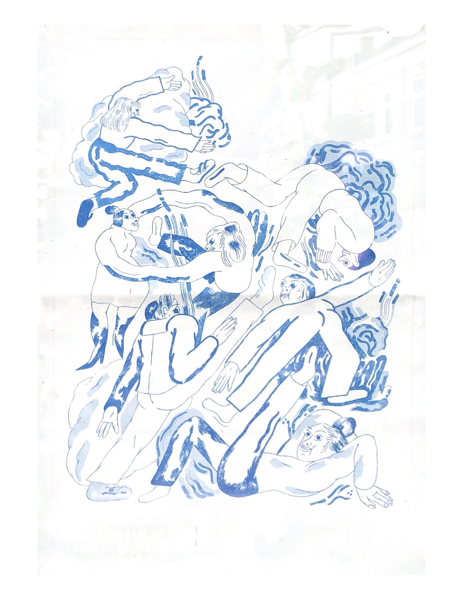
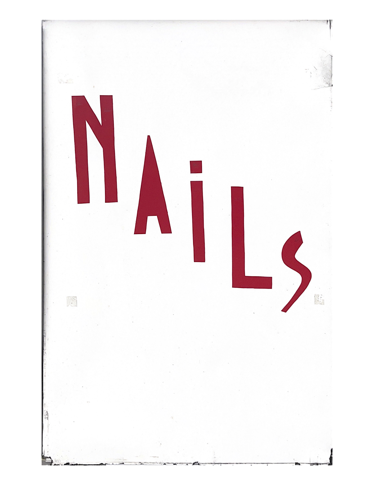
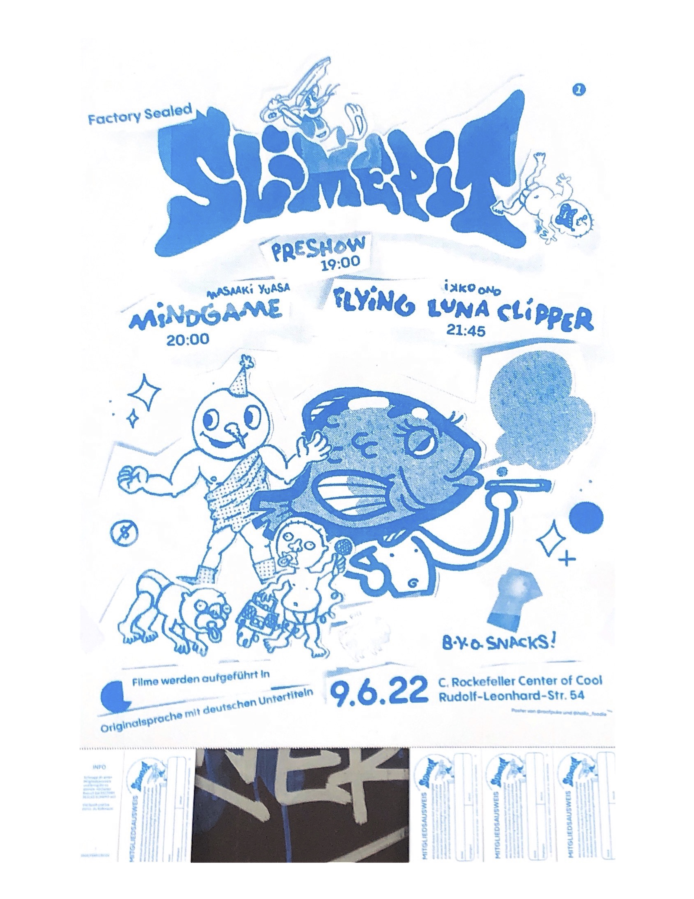
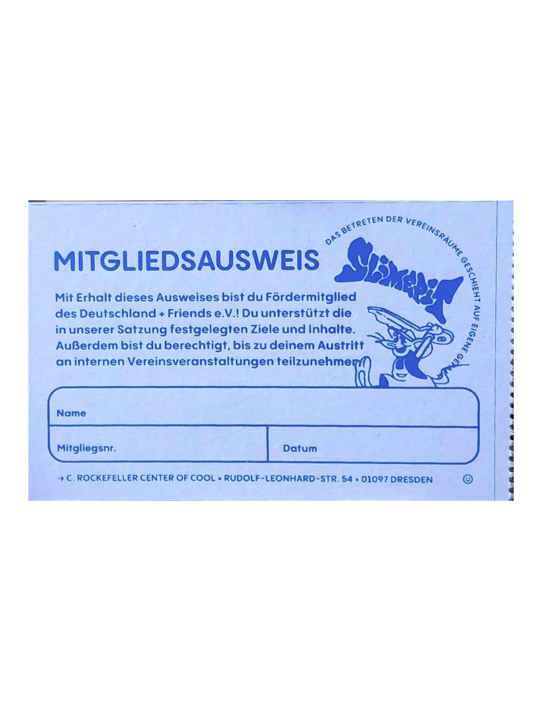
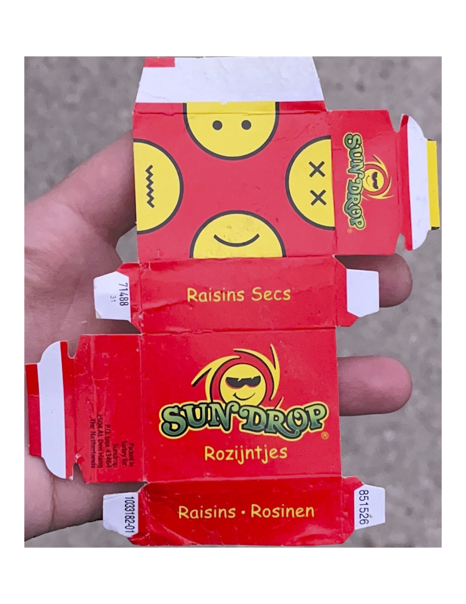

| i do not remember at all where i saw this thing, but according to the date it was either in Oberhausen, Dusseldorf, Duisburg or Rotterdam. just really liked this illustration |
loves this stand design of a nail salon in Rotterdam |
 a poster that i saw in Dnipro on one of those grey electrical boxes that are outside. it is for a concert of 4 punk groups. i absolutely love the design and the name - punk rats. a poster that i saw in Dnipro on one of those grey electrical boxes that are outside. it is for a concert of 4 punk groups. i absolutely love the design and the name - punk rats. |
this poster i saw in Dresden when i was there on an artist residency. the concept of tear off little cards - i like it. also the design and the vibes of it |
this little card is from the poster on the left |
found this on the floor on the street in Rotterdam. i think it looks really cool, a box in which cool drugs could be sold |
 saw this in the toilet at university of amsterdam library, made me laugh a bit saw this in the toilet at university of amsterdam library, made me laugh a bit |